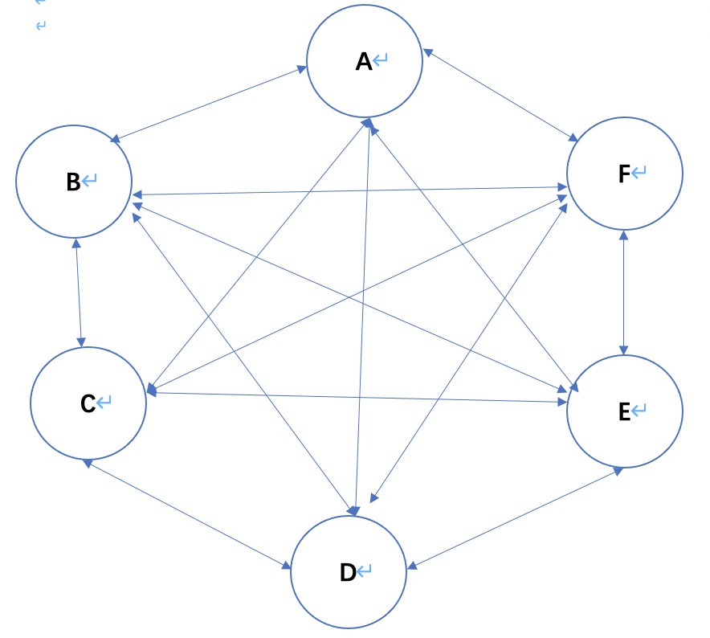
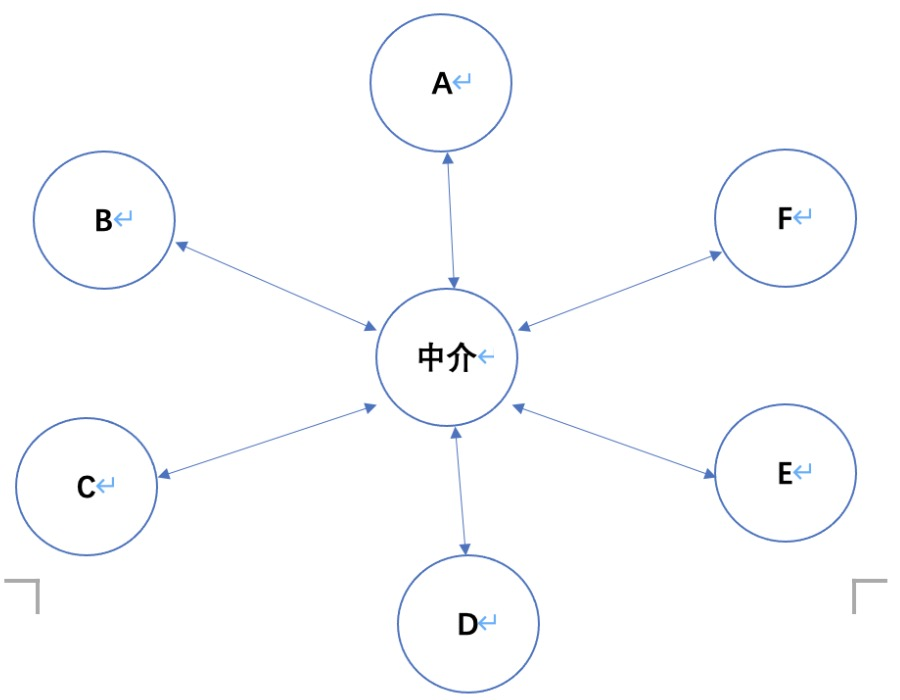

中介者模式
-
中介者模式 （Mediator
Pattern）是用来降低多个对象和类之间的通信复杂性。这种模式提供了一个'中介类'，
该类通常处理不同类之间的通信，并支持松耦合，使代码易于维护
-
'主要解决'：
对象与对象之间存在大量的关联关系，这样势必会导致系统的结构变得很复杂，同时若一个对象发
生改变，我们也需要跟踪与之相关联的对象，同时做出相应的处理。
- '何时使用'： 多个类相互耦合，形成了网状结构。N:M关系（多对多，如A类内部同时初始化了BCDEF类，B类内部同时初始化了ACDEF类）
- '如何解决'： 将上述网状结构分离为星型结构。1:N关系（1对多，AB...类分别只与中介通信，由中介转达到他们想要通知的类，或者通过中介获取某个类的状态，这样，AB...内只需要初始化中介类即可。）

引入中介者后 =======>

中介者与发布--订阅模式
这个中介者模式感觉与前面的发布-订阅者模式很像，都通过了中间的第三方进行通讯，但是发布-订阅者只是一方可以发布消息，另一方进行接收。中介者模式是所有参与方都可以发消息，也可以接收消息。
代码示例
- 无中介者状态 ： 每个类都要同时维护另外两个类的对象，如 飞机要维护接待者和引导者，接待者要维护飞机和引导者 等，以便互相之间都可以通信，每个类都很复杂。
- 中介者模式 ：每个类内部只需要维护中介者对象，然后由中介者类维护着所有需要通信的类的对象。这样 每个类内部就简单化了。而只有中介类是复杂的。